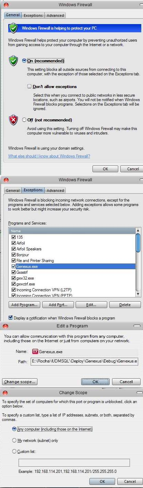
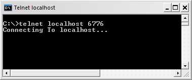
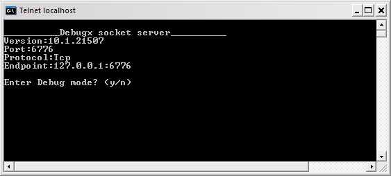
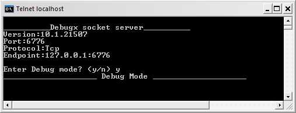

The following issues may occur when Debugging or Profiling an application. Message error: Warning: <Object Name> debuggable program. No debugger found at: <Computer Name> or Warning: <Object Name> under code coverage testing and no host found at: <Computer Name> Computer Name is where GeneXus is being executed.

The following steps can be executed to check connectivity between Debugger and application: 1. Open a command prompt console and run: telnet localhost 6776 1 (GeneXus must be open).  2. Press <Enter>.  3. Press Y (or y).  If you run the application in Debug mode, the console will show traffic between the application and GeneXus Debugger. 1 6776 is the default port number used by the DebuGX, but sometimes could be different. To know the real port number being used, open the source code of some debuggable program and search for Gxdebug.setPort (for Java) or Gxdebug.Port (for .net)
|
| Backlinks | |
| Debugging in GeneXus | Profiling in GeneXus (GeneXus 16 Upgrade 7 or prior) |